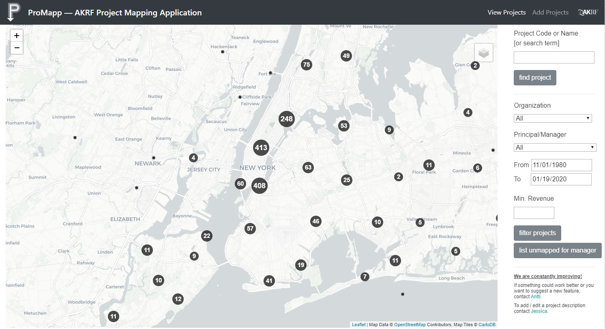

Project Mapping Application
Project managers and marketing department needed improved access to project locations and other project data. I developed ProMapp as a response to this need. Below is a short video showcasing the application and some key pieces of code.
The application enables users to locate and filter projects and access project data from internal databases. Project managers can also log in, pull up a list of their yet unmapped projects, and enter the locations into the project database by entering a project code and clicking on the map. ProMapp was built with Python Flask and PostgreSQL in the backend side and Leaflet JavaScript in the front. The application incorporates SQL backend filtering and client side validation for error free and smooth operation.
INSERT INTO projects project_code, geom
SELECT project_code,
ST_SetSrid(ST_Union(current_geom, st_MakePoint(X, Y)), 4326)
FROM (select ST_Force2D(ST_Astext(geom)) as current_geom
FROM projects WHERE project_code = project_code) sub
WHERE EXISTS (SELECT 1 FROM projects WHERE project_code = project_code)
ON CONFLICT (project_code) DO UPDATE
SET geom = excluded.geom
This piece of SQL adds a point to an existing point geometry to update project codes that have multiple locations. The subquery fetches the existing geometry and forces it to 2D to avoid an error if existing geometry has a Z value. Then we check that the project code exists and update the geometry with the union of the existing geometry and the new user input values. The result is a clean multipoint geometry when merging point and multipoint geometries.
def admin_login_required(func):
@wraps(func)
def decorated_view(*args, **kwargs):
if not current_user.is_authenticated and not current_user.admin:
return func(*args, **kwargs, logged_in = False)
else:
return func(*args, **kwargs, logged_in = True)
return decorated_view
I needed to trigger a modal if user is not logged in and also add an admin login for editing existing projects. For this end I rewrote the Flask login_required decorator to check if the current user is logged in as admin and to pass a variable logged_in if they are. This variable is passed on to javascript to trigger the login modal.
@app.route('/login_admin', methods=['GET', 'POST'])
def login_admin():
form = LoginForm()
if form.validate_on_submit():
username = request.form['username']
password = request.form['password']
admin = check_admin(username)
if admin:
pw_check = check_user(username, password)
if not pw_check:
flash('Invalid username or password', 'login_error')
return redirect(url_for('edit_project'))
else:
id = pw_check # check_user returns id
user = AppUser(id, username, password, admin)
login_user(user, remember=form.remember_me.data)
return redirect(url_for('edit_project'))
else:
return redirect(url_for('edit_project'))
else:
return redirect(url_for('edit_project'))
This is the backend side of the login modal. The function first checks if the username exists in the admins table, and if true, goes on to check the user's credentials, create the user, log in, and redirect to the relevant endpoint. The login_error category in flash messaging is reserved for the modal. @admin_login_required decorates the edit_project endpoint to decline access to non-admin users.
$(function () {
Parsley.addValidator('projectCheck', {
validateString: function(value) {
var send = {
id: value,
}
var url = '/projects/'
return $.getJSON(url, send, function(data) {
}).then(function(json) {
if (!json['features']) {
return $.Deferred().reject()
}
})
},
messages: {
en: 'Project code has not been mapped or does not exist!'
}
})
})
This is the client side validator of the Project Code field on the main page for viewing projects. It uses the flexible Parsley library, which also includes an awesome stylesheet. The validator checks at the endpoint if the submitted project code exists, and if the request fails, the message gets rendered below the form field.